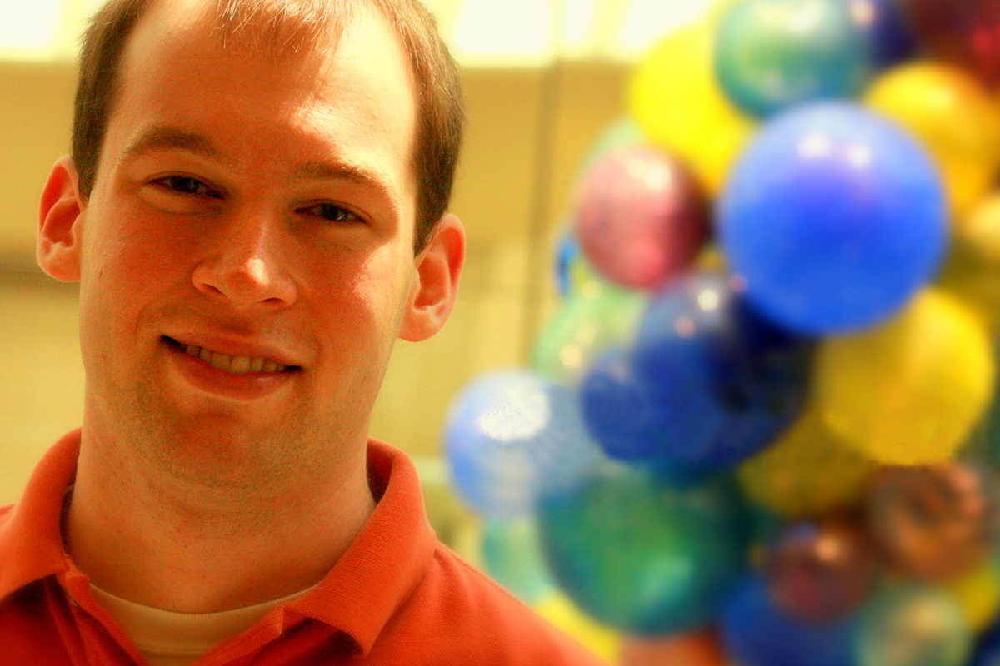
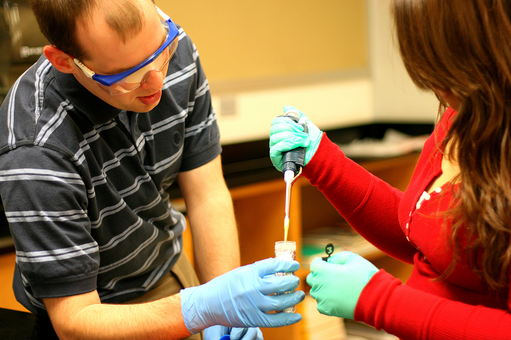

Local Researcher Leads East Side Students in Advanced Breast Cancer Lab
High school students on the east side of San Antonio got the chance to contribute to cancer research on October 8 through a program that brings university scientists into the classroom to share their research and passion for science. Aaron Jacobs, a doctoral candidate in the laboratory of Willard Clark, Ph.D., associate professor of biochemistry and molecular biology, led an advanced workshop on breast cancer research at Highlands High School. The event was the capstone to a larger unit within a year-long course led by Jacobs through the Superior Educators GK-12 Program at UTHSC, which places research students from the School of Medicine into local high school, middle and grade school classrooms throughout the city.
“This program is hugely beneficial for the high school students,”
Jacobs said. “They got the chance to conduct a truly novel experiment in breast cancer research, examining a specific research question that no one else in the world has ever done.” The challenge will continue until the end of the academic year as Jacobs continues to design advanced science curriculum in collaboration with R.J. McAdams, the teacher responsible for three of the four advanced biomedical sciences courses at Highlands. “Our students can really relate to this material because we actually talk about cancer biology in class -- we do whole modules on cancer,” McAdams said. “Project Lead the Way attracts some pretty high-level kids who are interested in careers in medicine.” Each participant in the Superior Educators GK-12 Program at UTHSC devotes about 15 hours a week to the project, including 10 hours of classroom instruction. Jacobs had already taught units on breast cancer research, cancer biology and pathology prior to the lab project.
“Being able to do this in a classroom environment really brings home the impact of science in a powerful way,”
Jacobs said. “Yes, we’re bringing these classes into their classroom, but the students are also doing outreach in the community. What they’re doing is transforming the culture in places where science is not a priority into a culture where science is real -- it’s real and it’s happening in their own school.” UTHSC student Larry Larsen works with a student at Highlands High School. Credit: Highlands High School Fine Arts Department.
